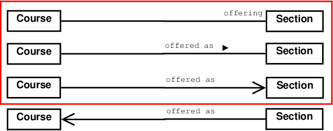
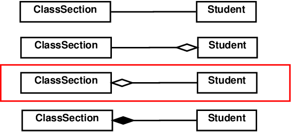
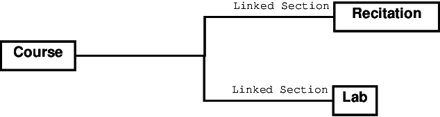

Mid-Semester Review
Thomas Kennedy
1 No Explicitly Defined Constructors
A smart aleck on your team has written a class, Cookbook. He has failed to declare a constructor–i.e., there are zero constructors. How would you persuade this team member that an explicitly declared Default constructor is necessary?
-
Declare an array of Cookbooks
Cookbook[] cookbooks = new Cookbook[10];or
Cookbook[] cookbooks = null; cookbooks = new Cookbook[10]; -
Declare and initialize a Cookbook
Cookbook cookbook = new Cookbook(); -
Create a specialized Cookbook–i.e., inherit from Cookbook
public class SimpleCookbook extends Cookbook { // Some code // ... } -
Ask which data structure was used–e.g.,
Vector<Recipe>ArrayList<Recipe>Linked ListArray
-
Try to use the Cookbook (e.g., output it)
2 UML: Relationship & Association Review
How would I represent the following in UML?
-
A
Coursemay be offered in multipleSection-s. -
A
Sectionis composed ofStudent-s. -
Course-s may have linkedRecitation-s andLab-s. -
Student-s may be required to enroll in oneLecture, oneLab, and oneRecitationfor a givenCourse.This is not a relationship that can be meaningfully captured with UML class diagrams. This scenario is more suited for UML Sequence diagrams. This type of scenario will not be present on the Midterm Exam.
3 Design Questions to Consider
-
Object-oriented analysis and design is useful even if a program will not be written in an Object Oriented programming language.
-
When do I need index cards?
- What am I creating?
- In which phase of design am I currently engaged?
-
Initial Design with
CRC cardsUML Class diagrams- Assigning Responsibilities.
- Listing Collaborators.
- The A-B-C Rule.
-
What is inheritance?
- How do I represent inheritance in UML Class diagrams?
- What is the name of this association?
-
What are aggregation and composition?
- How do I represent aggregation in UML?
- How do I represent composition in UML?
- How are aggregation and composition different?